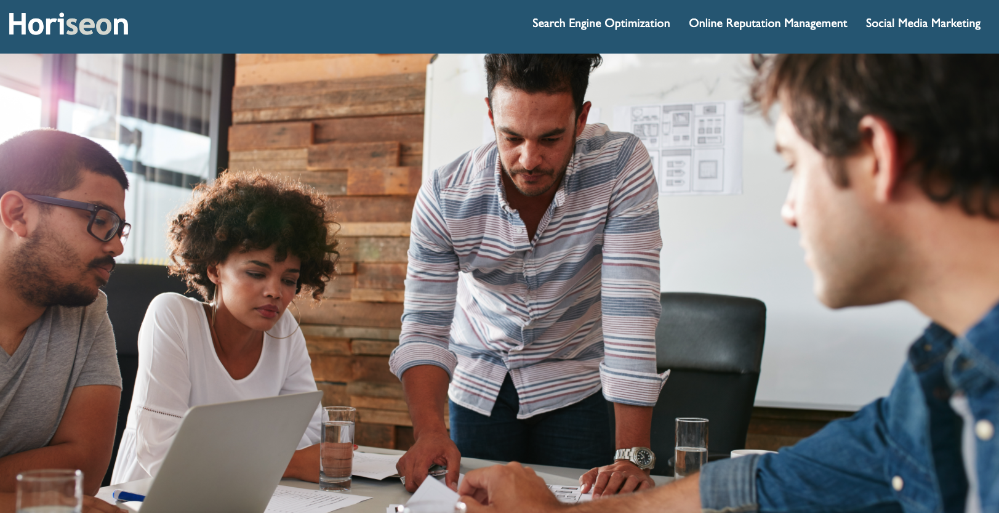

Work

Run Buddy

Horiseon Marketing

Thanks for visiting my portfolio, here is some professional and personal background on me.
My name is Alexys Carrasquillo, I am 24-years-old and my pronouns are she/her/hers. I am originally from Florida but have lived in North Carolina since I was 11-years-old. I am a goal-oriented and hard-working individual, who is constantly growing professionally and personally.
Becoming a Full-Stack Web Developer is my second career pursuit. I have an associate's degree in Broadcasting and Production Technology from Central Piedmont. I have worked in the media industry for three years as a videographer, video editor, graphic designer, and project manager. I am currently the Creative Director at Sunshine Media Network in Charlotte, North Carolina.
Throughout my college and media career, I have always wanted to grow my skill set and increase my knowledge of web development. After attempting to learn the basic information on web development on my own, I decided to enroll at UNC Charlotte's Coding Bootcamp in October 2021. I will receive my certificate in April 2022.
I am a self-starter and motivated individual. When I receive an assignment or project request from a client or employer, I begin working immediately and thoroughly to ensure I meet the standards and deadlines of the project. I am also team-oriented, I will always do what I can to assist my coworkers in their project needs.
If you would like to get in contact with me click here.
If you are interested in contacting me about a position, project or establishing a connection, please email me at alexys.carrasquillo@gmail.com